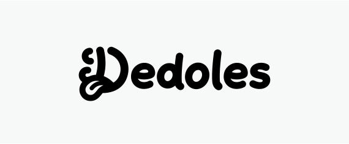
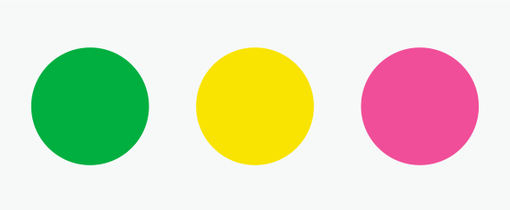
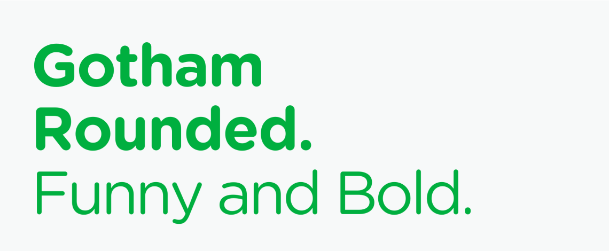
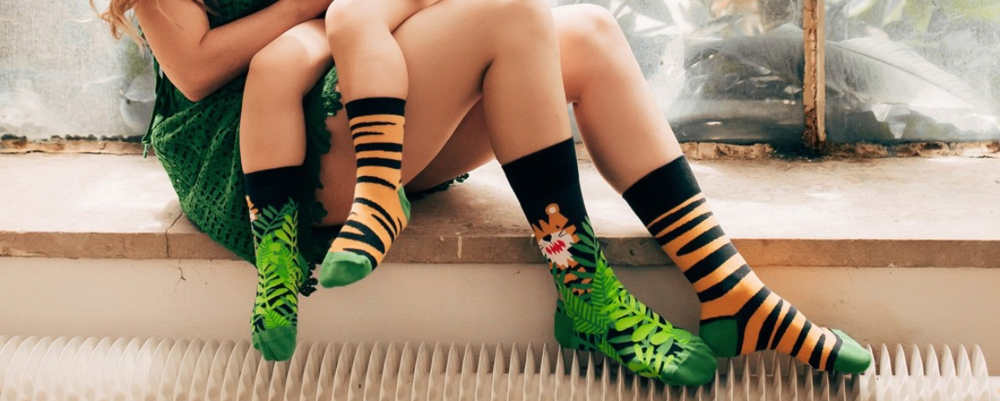

Úvod
Ahoj. My sme Dedoles.
Toto je manuál vizuálnej identity pre značku Dedoles, ktorého cieľom je zaručiť, aby bola vizuálna komunikácia jednotná naprieč všetkými online aj offline kanálmi.

1. Logo je základným identifkačným prvkom značky.
Používame ho všade, kde je to možné, v predpísanej podobe.

2. Symboly sú vizuálne ikony používané na vyjadrenie emócií a značiek.

3. Základná farebnosť slúži k rýchlemu rozpoznaniu značky a dopĺňa logo.

4. Naše písmo nám umožňuje pôsobiť zábavne aj profesionálne. Písmo je spolu s logom a farebnosťou dôležité pre identifkáciu značky.

5. Fotografe sú jedným z kľúčových prvkov, ktoré používame na rozpoznanie identity značky Dedoles.
INTRODUCTION
Prvky značky
Základné elementy značky sú to, čo značku defnuje, reprezentuje a robí nielen spoznateľnou, ale aj nezameniteľnou. Pri základných elementoch značky sa riadime týmito pravidlami:
- Používame ich vždy, keď je to možné.
- Používame ich výhradne v podobe, akú predpisuje tento manuál.
- Používame ich vždy spolu. Na každý formát umiestňujeme aspoň tri elementy.